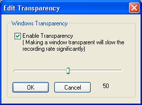

(From the main menu, choose Tools->Screen Annotations)
The Screen Annotations feature allows you to add captions to your screen during recording. An example of a screen annotation is shown below:
You can display the Screen Annotations dialog box by clicking on the icon  or choose Tools->Screen Annotations from the main menu.
or choose Tools->Screen Annotations from the main menu.

To instantiate the shape Orange Gradient, simply double click on it or drag it out of the Screen Annotations dialog box.
Screen annotations consist of two main components: Shapes and Layouts.
A shape is just a floating window that will appear on top of all other windows on your desktop. An example is shown below.
To create the shape above, simply double click on the item Orange Gradient or drag it out of the Screen Annotations dialog box, then to edit it, right-click the shape to display the context menu shown below.


Notice the text is surrounded by a dotted rectangle after you have chosen the Edit Text command. You can move and resize the dotted rectangle by dragging it with your mouse.
Clicking on the Font Button allows you to choose the Font Name, Font Style (Bold, Italic, Underline) and Font Color of the shape's text. The three buttons are used for setting the alignment of text. The Choose Language / Encoding button allows you to choose an appropriate font for your language if it is non-Western (English, French, German etc). This feature is available only on Windows 2000 and XP.

Select Edit Image from the context menu to change the text of the shape.

The Cutout / Transparent Region allow you to create non-rectangular windows. It refers to the region that allows the background to show through. There are two methods to create a cutout region:
All areas of the image with the specified transparency color will be made transparent. For example, if the transparency color is Black, the image  will be transformed into
will be transformed into 
Currently, the predefined shapes are round-rectangle, ellipse and rectangle. For example, a round-rectangle cutout region for the image will be something like 
For a predefined cutout region, you can add a border, and set the color and size of the border.
You can set the Background color for a shape if the shape does not have an image. Otherwise, you can click the Load New Image button to change the background image to a new file. The file formats that are accepted are BMP, GIF and JPEG.
Select Edit Transparency from the context menu to change the shape's transparency. This feature is available only in Windows 2000 and XP.


Note that recording a transparent window will cause the frame rate to drop significantly. You will also have to enable the Program Options->Capture Translucent / Layered Window setting for the shape to be properly captured into the AVI movie.
Select Resize from the context menu to resize the shape.

Note that a shape with a large size will be drawn and displayed very slowly.
In the Screen Annotations dialog box, right click on an item to display a context menu for managing and creating shapes.

You can create a new shape by choosing the New Shape command and you can Copy, Paste or Remove shapes in the Screen Annotations dialog box using these commands. You can also rename a shape by choosing the Edit Shape Name command or selecting a shape and pressing F2.
You can rearrange the order of the shapes in the list by dragging a shape onto another. For example, to switch the order of the 'Flat Text' and 'Dialog', simply drag 'Dialog' onto the 'Flat Text' item.
The Shape Library menu lets you:

Note: In the event your default shape library file CamShapes.ini gets corrupted and is unable to load on startup, you can restore the default shapes by opening the file default.shapes in the installed directory of CamStudio.
The New Shape command will launch a dialog box where you can specify the:

A layout is just the arrangement of one or more shapes on your desktop. An example is shown below:

You usually prepare all your layouts before recording starts. When you start recording, you will click a hotkey/shortcut key to cycle through the layouts to display the appropriate captions at the proper time.
You can mange your layout by clicking on the layout tab of the Screen Annotations dialog.

You instantiate a layout by simply double clicking on the layout item or drag it out of the Screen Annotations dialog box. By doing so, all the shapes that are saved into the layout will be displayed on the desktop in their correct order and position.
To save a layout, first, arrange your shapes in their correct position and order. Right click on any of the shapes to bring up a context menu, and select the Save Layout command.
You can cycle through the layouts by clicking the Next Layout key in the Screen Annotations dialog box. Every click will close all existing shapes on the desktop and instantiate a new layout. Alternatively, you can use a hotkey / keyboard shortcuts to perform the cycling. To customize the keys for navigating the layouts, you can choose Options->Keyboard Shortcuts from the main menu or Objects->Layout Shortcuts from the Screen Annotations menu.
The keys for cycling through the layouts are: